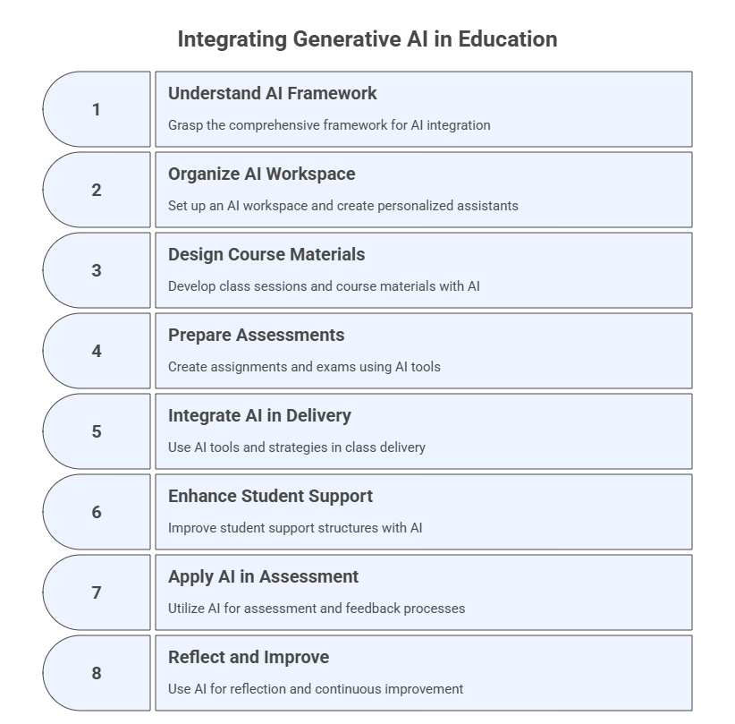
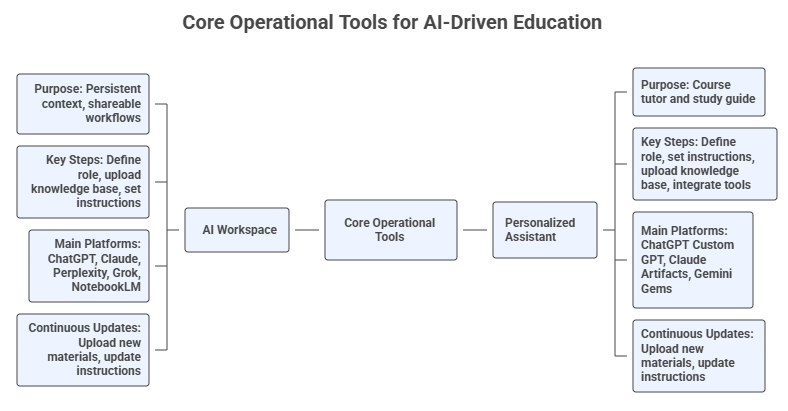
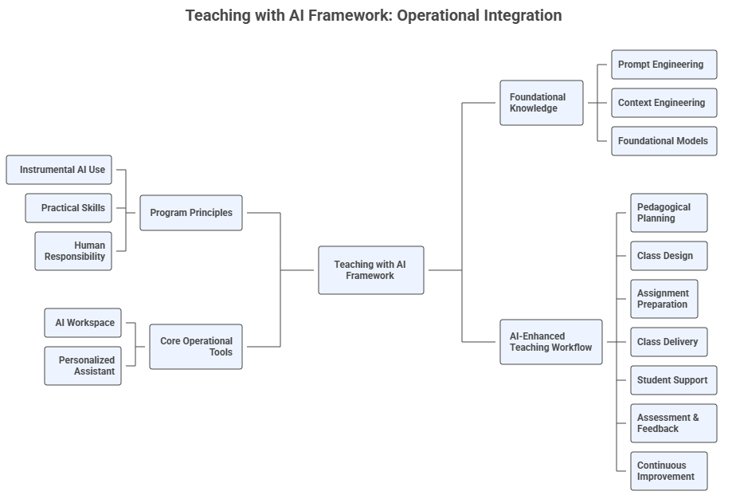

Teaching with AI#
Welcome to the Teaching with AI Program, part of the FGCU AI Academy led by the Dendritic Institute for Human-Centered AI & Data Science at Florida Gulf Coast University. This program is designed for faculty and instructors seeking practical, hands-on methods for integrating Generative AI tools throughout the teaching and learning cycle. Unlike pedagogical or learning-science programs, which are covered separately in the Academy, this training focuses on the instrumental and operational use of AI.
Disclaimer#
This training is intended to demonstrate the capabilities of generative AI tools in educational contexts. It is not an endorsement of using AI-generated content without human expertise, oversight, or academic judgment, nor is it a prescriptive guide for its use. Instructors remain fully responsible for:
Curating and validating instructional content
Disclosing when and how AI tools are used
Choosing the specific tools and models they want to use
Ensuring the ethical, responsible, and context-appropriate integration of AI into teaching and learning
Academic content must always be aligned with the subject matter, learning objectives, institutional context and policies, and professional standards. While AI can assist in content creation and instructional design (AI-assisted), it should not replace the critical role of educators (not AI-driven).
Model and Tool Neutrality
Throughout this program, we present a variety of foundational models, general-purpose LLMs, and specialized AI tools designed to support teaching and learning. We do not endorse or receive sponsorship from any of the vendors, platforms, or products mentioned. Our emphasis on foundational and general-purpose models is intentional: it ensures that instructors develop transferable skills and learn how to use AI for teaching independently of any specific vendor, interface, or model-specific feature.
Participants are free and encouraged to use any AI model or tool of their preference, including alternatives not mentioned here, so long as they meet instructional needs and comply with institutional policies.
How This Program and Jupyter Book Were Created
This program and Jupyter Book were created through a rigorous, human-led process in which generative AI served as an assistive tool for drafting, ideation, and organization. All content was curated, complemented, reviewed, revised, and validated by the instructor to ensure pedagogical integrity, accuracy, and alignment with institutional policies. This iterative co-development process models the responsible, transparent, and human-centered use of AI advocated throughout this training.
For current FGCU policies on generative AI, please refer to: 🔗 https://www.fgcu.edu/about/leadership/officeoftheprovost/generative-ai
1. Program Goals#
The goal of this program is to equip instructors with practical, immediately applicable skills for using GenAI across:
Strategic planning
Class and course design
Class delivery
Assessment and feedback
Student support
Reflection and continuous improvement
The the basic background necessary to use GenAI tools is presented in the AI Literacy program. If you need some introductory knowledge on prompt engineering and a general understanding of AI and its history, we invite you to take that program before proceeding with this one.
2. Learning Objectives#
By the end of this program, participants should be able to:
Understand the comprehensive framework for integrating generative AI into the teaching and learning process, recognizing its application across strategic planning, design, delivery, support, assessment, and reflection phases.
Organize your AI workspace and create personalized assistants to enhance teaching and learning and leverage AI tools to support pedagogical planning, content generation, instructional decision-making, and student support.
Design and develop class sessions and course materials by breaking down content into modules, structuring sessions, finding relevant literature, generating content from sources, and creating learning activities with AI support.
Prepare assignments and exams by designing formative and summative assessments, creating authentic tasks (quizzes, case studies, projects), developing clear rubrics, and considering accessibility and academic integrity, utilizing AI as an assistant.
Integrate generative AI tools and strategies into class delivery to facilitate active and student-centered learning, employ various content delivery methods, monitor engagement and comprehension, and adapt instruction responsively.
Enhance student support structures by using AI to supplement office hours and respond to inquiries, offer guidance on assignments and study strategies, monitor student success, provide AI-curated resources, encourage peer collaboration, and explore the introduction of AI tutors.
Apply AI tools and techniques to assessment and feedback processes, including conducting assessments with AI support, generating rubric-based constructive feedback, facilitating AI-assisted self- and peer-assessment, and exploring AI for grading and originality verification.
Utilize generative AI for reflection and continuous improvement of teaching practices, including identifying effective elements, revising materials and strategies, staying engaged with research, sharing experiences, and analyzing student feedback and data.

3. Structure and Approach#
A multi-layered, workflow-driven program for operational AI integration in higher education
The Teaching with AI Program is built as a practical, operational, and iterative system for integrating generative AI into every phase of the teaching and learning cycle. Unlike pedagogical theory–oriented programs, this course focuses on how instructors actually use AI tools systematically, responsibly, and efficiently within real teaching workflows.
Across eight modules, instructors progressively build two persistent tools:
The AI Workspace (Project) – your design and development environment for planning, creating, auditing, and improving course materials. The main platforms to be used to create AI workspaces are ChatGPT, Perplexity, Claude, and Grok).
The Course Personalized Assistant (PA) – your student-facing AI tutor for explanations, study support, and assignment clarification (without solving graded tasks). The main platforms to be used to create PAs are Custom GPTs, Claude Artifacts, Gemini Gems, and CoPilot Agents.

The entire program is structured as a guided transformation of your teaching practice, with each module updating, refining, and expanding these tools.
3.1 A Process-Based, End-to-End Framework#
The program is structured around the AI-Enhanced Teaching Workflow containing seven phases, enabling instructors to gradually integrate AI across the entire course cycle while maintaining pedagogical integrity and institutional alignment.
Module |
AI-Enhanced Teaching Phase |
Main Instructional Focus |
Core Artifacts Produced |
Workspace / PA Updates |
Key GenAI Tools |
|---|---|---|---|---|---|
1. Introduction to Teaching with AI |
Foundations for AI-Enhanced Teaching |
Framework, responsible use, institutional policies, prompt & context engineering |
AI Workspace created; PA created; initial instructions & guardrails |
Initialize Workspace/PA; upload policies; set core capabilities & boundaries |
ChatGPT Projects, Claude Projects, Perplexity Spaces, NotebookLM, Gemini |
2. AI-Enhanced Pedagogical & Didactic Planning |
Phase A — Planning |
Learning outcomes, audience analysis, pedagogical models, syllabus creation, AI use policies |
LO table, learner personas, pedagogy map, syllabus drafts, AI policy |
Upload syllabus, policies, LO; add alignment & auditing behaviors |
Perplexity Academic, Consensus, SciSpace, Google Scholar Labs, Elicit, Scite |
3. AI-Assisted Class Design & Development |
Phase B — Class Design |
Session planning, slide decks, examples, literature grounding, multimodal content |
90-min plans, slides, readings, activities, diagrams, concept maps |
Upload class materials; add content-generation & literature-grounding capabilities |
Gamma, Canva Magic Studio, Claude Artifacts, Napkin.ai, NotebookLM |
4. AI-Enhanced Assignment & Exam Preparation |
Phase C — Assignment Design |
Formative/summative assessments, multimodal tasks, rubrics, integrity & accessibility |
Quizzes, case studies, projects, rubrics, assignment variants |
Upload assessments; add rubric & integrity audit features |
ChatGPT, Gemini, Synthesia, HeyGen, Canva, Eduaide |
5. AI-Enabled Class Delivery |
Phase D — Delivery |
Active learning with AI, storytelling, Socratic questioning, live adaptation |
AI-augmented activities, polls, misconception probes, live summaries |
Add real-time explanation & pacing support; upload teaching materials |
Poll Everywhere + AI, Gamma, Claude Artifacts, ChatGPT |
6. AI-Powered Student Support |
Phase E — Student Support |
PA-guided study support, scaffolding, peer instruction, NotebookLM workspaces |
Study guides, flashcards, FAQs, diagrams, peer-learning prompts |
Add student-safe materials to PA; refine boundaries; expand explanation levels |
Course PA, NotebookLM, ChatGPT, Gemini, Claude |
7. AI in Assessment & Feedback |
Phase F — Assessment & Feedback |
Rubric-based feedback, self/peer assessment, reasoning checks, academic integrity |
Feedback templates, misconception matrices, checklists, grading matrices |
Upload student-safe materials; integrate feedback behaviors |
Gradescope, CoGrader, EssayGrader, Turnitin, Stargrader |
8. AI-Supported Reflection & Improvement |
Phase G — Reflection & Improvement |
Analytics, SPoI creation, feedback synthesis, course revision cycles |
SPoI forms, dashboards, summaries, revision memos, next-iteration plan |
Upload reflective artifacts; add version-tracking capabilities |
Perplexity Academic, SciSpace, NotebookLM, ChatGPT |
3.2 A Multimodal, Multi-Tool Ecosystem Approach#
Throughout the program, participants develop fluency with multiple LLM ecosystems, including ChatGPT, Claude, Gemini, Perplexity, NotebookLM, SciSpace, Gamma, Canva, Grok, and much more.
The logic behind this approach is:
Different tools have different strengths (e.g., Claude for artifacts, Gemini for images, Perplexity for cited research, NotebookLM for grounded synthesis).
Instructors learn to select suitable tools for each stage of their teaching workflow.
The program models a platform-agnostic AI practice, reflecting real academic and industry environments.
In each module, tool usage is contextualized:
Design/development tasks occur in the Workspace.
Student explanations and scaffolding occur through the PA.
Research synthesis is handled by tools like Perplexity Academic, Consensus, SciSpace.
Multimodal production uses tools like Gamma, Canva Magic Studio, or Claude Artifacts.
3.3 Progressive Building of Two Core AI Systems#
A. The AI Workspace (Project)#
A persistent, memory-enabled environment that stores:
syllabus, schedule, policies
assignments, rubrics, templates
slides, notes, readings
datasets and sample materials
It becomes the hub for:
consistent document-grounded content creation
mapping learning outcomes to activities and assessments
generating variants, versions, improvements
auditing alignment, accessibility, and integrity
tracking revisions across course iterations
B. The Personalized Assistant (PA)#
Your course’s “AI tutor”, designed with:
explicit safety and academic integrity rules
multi-level explanation capabilities
ability to reference syllabus and course files
structured guidance for assignments, without completing them
weekly study plans, flashcards, glossaries, FAQs, diagrams
The PA grows each module as student-facing materials are created.
3.4 The Program’s Instructional Approach#
1. Short theory → hands-on practice
Each module begins with a concise conceptual introduction, followed by intensive practice using real course materials.
2. Prompt Templates, Patterns & Meta-Prompting
Each module offers different types of prompt engineering techniques, enabling instructors to adapt workflows to various LLMs.
3. Cross-Model Comparison & Verification
Participants:
compare AI outputs from multiple tools
annotate differences
use Workspace or PA to diagnose errors
refine outputs with iterative prompting
This builds critical AI literacy, not just production skills.
4. Authentic, Product-Oriented Workflows
Each module ends with concrete artifacts, such as syllabi, class plans, slide decks, assessments and rubrics, study guides, reflective memos, SPoI instruments, and improvement dashboards. These can be deployed directly in the participants’ actual courses.
3.5 Continuous Improvement & Versioning#
A distinctive component of the program is longitudinal improvement, supported through AI:
Every version of the course is recorded in the Workspace.
AI identifies recurring issues or patterns.
Revised assessments, slides, and policies are iteratively generated.
A reflective practice notebook grows over time.
This enables sustained teaching innovation, not just a one-time redesign.
3.6 What Makes This Program Unique?#
End-to-end workflow integration (planning → improvement)
Two persistent AI systems built step-by-step
Cross-tool literacy rather than platform dependence
Multimodal content generation across the curriculum
Evidence-based and research-aligned AI practices
Real teaching artifacts produced in every module
Explicit guardrails for academic integrity and responsible AI use
This program is not a typical “how to use AI” workshop. It is a complete transformation of your teaching ecosystem, powered by structured, responsible, and human-centered AI.
3.7 Operational Integration#
The contents of the concept map below was generated with NotebookLM and contains an overview of the seven steps of the teaching framework, the core operational tools proposed (AI Workspace and Course Personalized Assistant), the foundational knowledge necessary to navigate the course, and the program principles. The final Mind Map was drawn using Napkin.ai.

4. Responsible and Ethical AI Use in Teaching#
The program ensures that AI outputs are always:
aligned with institutional policies and student code of conduct
used with transparency and citation
designed to support, not replace, human expertise
compliant with integrity and accessibility requirements
Every workflow explicitly distinguishes between:
Instructor tools (Workspace)
Student tools (PA, NotebookLM)
Prohibited uses (grading keys, exam answers, private notes in PA)
Generative AI expands what instructors can create, automate, and personalize, but it must be used responsibly. Ethical teaching with AI requires transparency, accuracy, respect for student agency, and alignment with institutional policies. In your Teaching with AI journey you should follow some guiding principles:
4.1 Transparency#
Disclose how you use AI to create instructional materials, assessments, or feedback.
Inform students when AI is used in the course and under what conditions.
Document prompts or workflows when required by policy or good practice.
4.2 Academic Integrity#
AI should support, not complete, assessments meant to measure student learning.
Students must understand what forms of AI assistance are allowed, restricted, or prohibited.
Instructor-facing AI tools must not be shared with students if they contain grading keys, instructor notes, or assessment logic.
4.3 Accuracy and Verification#
AI outputs may contain:
factual errors
hallucinated citations
oversimplifications
biased assumptions
Good practice:
Verify all AI-generated content before using it in class.
Cross-check claims, examples, code, or datasets.
Revise outputs to align with course standards and context.
4.4 Equity and Accessibility#
AI can help:
produce multimodal formats
translate content
adapt readability
generate alternative explanations
However:
Ensure that AI tools do not disadvantage students with limited access.
Provide non-AI alternatives when appropriate.
Protect student privacy and avoid requiring external accounts unless approved by the institution.
4.5 Human Judgment Leads#
AI should enhance, not replace, your expertise. Responsible teaching with AI requires:
pedagogical decisions made by the instructor
deliberate alignment with outcomes
continuous monitoring of AI accuracy
thoughtful design of assessments that preserve learning integrity
4.6 Follow Institutional Policies#
Institutional generative AI policies usually outline expectations for:
ethical use
academic integrity
student conduct
instructor responsibilities
Always review these documents when designing AI-enhanced materials or policies.
4.7 Data Privacy and Protection#
Using AI tools in teaching must align with privacy regulations and safeguard student information.
Do not upload personally identifiable student information (PII), such as names, email addresses, student IDs, grades, demographic data, or identifiable excerpts of student work, into external AI tools unless they are institutionally approved and FERPA-compliant.
When using AI for grading or feedback generation, anonymize all student work, removing names, references, metadata, or contextual details that could reveal identity.
Prefer institutionally licensed AI platforms when handling any content related to student learning or performance.
Inform students if any of their anonymized work will be used with AI tools, and provide alternatives for those who prefer not to engage with third-party systems.
Avoid requiring students to create accounts on external AI platforms unless approved by the institution.
Always follow the institutional policies and legal guidelines on data protection when integrating AI into your teaching workflow.
5. How to Use This Jupyter Book#
A workflow-oriented guide for navigating the Teaching with AI program
This Jupyter Book is designed not as a linear textbook, but as an interactive, modular, and artifact-generating environment that accompanies the Teaching with AI program. It functions as your reference manual, prompt library, workspace guide, and teaching-development companion throughout Modules 1–8.
To help you get the most out of it, this section explains how to navigate the book, how to integrate it with your AI Workspace and Personalized Assistant, and how to use it as part of your ongoing teaching practice.
5.1 The Jupyter Book as a Living Reference#
This book is intentionally structured to be:
Modular – each chapter (module) mirrors one phase of the AI-Enhanced Teaching Process Framework.
Prompt-rich – every section includes ready-to-use prompt templates tailored to higher education.
Tool-agnostic – prompts and workflows are compatible with various foundational and general-purpose models.
Cross-referenced – prompts and workflows point back to earlier modules, ensuring continuity.
Evolving – you can export, copy, remix, or upload content to your AI Workspace over time.
Each module includes:
Conceptual overview
Prompt templates
Tool demonstrations
Updates to your AI Workspace and PA
Exercises
Reflection questions
This allows you to move seamlessly from learning → doing → integrating → improving.
5.3 How to Integrate the Book With Your AI Workspace and PA#
The Jupyter Book works best when paired with your AI Workspace (Project) to be created in Module 1. The book contains numerous student-facing prompts designed specifically for your PA. Whenever you see simplified rubrics, assignment explanations, study strategies, self-assessment checklists, flashcards, and FAQs, these can be copy-pasted into your PA’s instruction block or provided directly to students.
Important:
Workspace = instructor-facing design space
PA = student-facing guidance tool
Never upload instructor-only materials into the PA. The Jupyter Book points out exactly which components can safely be shared with students.
5.4 Using the Prompts Effectively#
Each module includes a set of prompts which requires some best practices:
Always adapt placeholders (e.g., [Course Title], [Topic], [Paste Assignment]).
When possible, ground prompts in uploaded files.
Ask for variations to compare outputs.
Use revision loops: draft → audit → improve → finalize.
5.5 Using the Exercises as Production Tasks#
Every module ends with production-oriented exercises. These are not generic activities—they are designed to produce real components for your actual course.
Examples:
Module 2 → generate learning outcomes and a syllabus draft
Module 3 → produce a 90-minute class plan and slide deck
Module 4 → create a case study, rubric, and multimodal assignment
Module 5 → build active-learning activities with AI augmentation
Module 6 → design study guides and PA workflows
Module 7 → generate rubric-based assessments and feedback
Module 8 → design SPoI forms and reflective improvement plans
6. Human-Centered Teaching with AI#
AI supports teaching, it does not replace teachers.
Educators maintain responsibility for content validity, rigor, transparency, and ethics.
7. GenAI Tools to be Studied#
ChatGPT#
ChatGPT is a versatile AI language model developed by OpenAI, capable of interpreting natural language, performing various statistical analyses, coding in Python, and generating data visualizations such as bar charts, pie charts, scatter plots, and histograms. It supports data uploads in formats like CSV, XLSX, PDF, and JSON (up to 50MB) and can integrate with cloud storage like Google Drive and OneDrive. ChatGPT excels in broad AI capabilities including data analysis, summarization, and storytelling. It requires web browsing for real-time data updates. Access ChatGPT here: [https://chat.openai.com/]
Claude#
Claude.ai is an AI assistant with strong natural language processing capabilities and expanding tools for data analysis. It supports data uploads and can process data using JavaScript within its Analysis Tool. Claude.ai can perform complex calculations, data manipulation, and create visualizations through its Analysis Tool and Artifacts feature. It primarily analyzes uploaded data and does not rely on real-time web browsing. Access Claude.ai here: [https://claude.ai/]
Perplexity#
Perplexity is a research-focused AI platform emphasizing data-driven insights and real-time web search integration. It allows file uploads for analysis and uses coding capabilities within its Deep Research mode to identify patterns, trends, and anomalies. Perplexity integrates web search for broader context and is particularly strong in providing current data and research-backed answers. Access Perplexity here: [https://www.perplexity.ai]
Grok#
Grok is a conversational AI developed by Elon Musk’s xAI, designed to provide witty, insightful, and real-time responses. Integrated with X (formerly Twitter), Grok emphasizes reasoning and humor, offering a more personality-driven interaction style. It supports real-time data access and is positioned as a competitor to ChatGPT and Gemini. Access Grok here: [https://x.ai]
Meta AI#
Meta AI is Meta’s suite of generative AI tools embedded across Facebook, Instagram, WhatsApp, and Messenger. It offers multimodal capabilities including text, image, and video generation, and supports real-time chat, creative content generation, and productivity tasks. Meta AI is powered by the Llama 4 model and is accessible via Meta’s apps and a standalone assistant. Access Meta AI here: [https://www.meta.ai]
Copilot#
Copilot is Microsoft’s AI assistant integrated across tools like Word, Excel, PowerPoint, Outlook, and Teams. It leverages large language models to help users draft content, analyze data, summarize meetings, and automate workflows. In Excel, it can generate formulas, create charts, and explain data trends. In Word and PowerPoint, it assists with writing, editing, and designing presentations. Copilot is deeply embedded in Microsoft 365, enhancing productivity through natural language commands. Access Copilot here: [https://copilot.microsoft.com]
Gemini#
Gemini is Google’s family of multimodal AI models integrated into Google Workspace and available via the Gemini web app. It assists users in drafting, summarizing, brainstorming, analyzing documents, and generating code. Within Docs, Gmail, and Sheets, Gemini enhances productivity by offering smart suggestions, data insights, and content generation. It also supports image understanding and code interpretation through its advanced model versions. Access Gemini here: [https://gemini.google.com]
NotebookLM#
NotebookLM is a personalized AI research assistant from Google designed to help users work with their own documents. It can summarize large texts, generate FAQs, suggest outlines, timelines, and even podcast scripts. Unlike general-purpose chatbots, NotebookLM focuses on grounded responses based solely on the sources provided by the user, making it ideal for academic, legal, and research-based tasks. Access NotebookLM here: [https://notebooklm.google]
Napkin#
Napkin is a visual storytelling AI tool that transforms plain text into professional diagrams, infographics, and flowcharts. It is ideal for business presentations, educational content, and social media visuals. Users can customize visuals with icons, connectors, and themes, and export them in formats like PNG, PDF, and SVG. Access Napkin here: [https://www.napkin.ai]
Gamma#
Gamma is an AI-powered content creation platform for building presentations, documents, and websites. It uses natural language prompts to generate scrollable, interactive content with modern design. Gamma is ideal for pitch decks, proposals, and educational materials, and supports real-time collaboration and publishing. Access Gamma here: [https://gamma.app]
AI Studio#
Google AI Studio is a development platform for building with Gemini, Google’s multimodal AI models. It supports chat, code execution, file analysis, and video generation. Designed for both beginners and developers, AI Studio enables rapid prototyping and integration of AI into applications with a user-friendly interface. Access AI Studio here: [https://aistudio.google.com]
SciSpace#
SciSpace is an AI research assistant tailored for academic reading, comprehension, and exploration of scientific literature. It allows users to upload PDFs of scholarly articles and interact with them through a chat-based interface that explains complex concepts, defines technical terms, and summarizes content section-by-section. SciSpace is particularly strong in STEM fields and integrates citation tracing, question generation, and concept mapping. It is ideal for literature review, paper comprehension, and academic study. Access SciSpace here: [https://scispace.com/]
CoGrader#
CoGrader.com is an AI-powered grading assistant designed to streamline the evaluation of student work, especially in assignments requiring written or rubric-based feedback. Educators can upload student responses along with custom rubrics, and CoGrader generates consistent, criterion-based scores and feedback. It supports batch processing of submissions and exports results in spreadsheet-friendly formats. CoGrader is ideal for scaling assessment in large classes while maintaining feedback quality. Access CoGrader here: [https://www.cograder.com]
EssayGrader#
EssayGrader.ai is an AI tool focused on evaluating academic writing and generating detailed, rubric-aligned feedback. Users can paste essays or upload files, define assessment criteria, and receive structured evaluations across areas such as organization, argument quality, grammar, and originality. EssayGrader.ai aims to support formative feedback and can assist in both summative grading and student revision. It emphasizes clarity, consistency, and transparency in AI-assisted writing assessment. Access EssayGrader.ai here: [https://www.essaygrader.ai]
Gradescope#
Gradescope is an AI-enhanced grading platform designed to streamline assessment workflows for assignments, quizzes, exams, and coding tasks. It supports handwritten submissions, scanned PDFs, code files, and digital assignments. Gradescope uses AI-assisted grouping to cluster similar student answers, enabling faster and more consistent grading of open-response questions. Rubrics can be modified on the fly, with changes automatically propagating to all graded submissions. Access Gradescope here: [https://www.gradescope.com/]
Turnitin#
Turnitin is an academic integrity and originality-checking system widely used in higher education. It analyzes uploaded student work against a massive corpus of academic publications, internet sources, prior submissions, and commercial databases. Turnitin includes advanced AI-writing detection indicators, similarity scoring, and detailed originality reports highlighting matches and potential plagiarism risks. It integrates seamlessly with major LMS platforms. Access Turnitin here: [https://www.turnitin.com/]
Stargrader#
Stargrader is an AI-powered auto-grading platform designed primarily for structured, rubric-based evaluations, especially in computer science, engineering, and math. It supports automated grading of coding assignments, proofs, quantitative exercises, and short structured answers. Stargrader can generate consistency checks, provide rubric-aligned feedback, and export grade data for LMS integration. Access Stargrader here: [https://stargrader.com/]
Canva Magic Studio#
Canva Magic Studio is an AI-enhanced design suite embedded within Canva that generates presentations, documents, posters, diagrams, and videos from natural language prompts. It supports Magic Design for layout generation, Magic Write for content drafting, and Magic Expand/Edit for image manipulation. Canva integrates text, images, icons, and audio seamlessly into high-quality visuals suitable for teaching materials. Access Canva Magic Studio here: [https://www.canva.com/magic-studio/]
ElevenLabs#
ElevenLabs is an advanced AI voice-generation and text-to-speech platform capable of producing natural-sounding narration in multiple languages. It supports voice cloning, custom voice creation, and high-fidelity audio suitable for lectures, podcasts, accessibility materials, and instructional videos. ElevenLabs excels in generating expressive, human-like voiceovers from scripts or uploaded text. Access ElevenLabs here: [https://elevenlabs.io/]
HeyGen#
HeyGen is an AI video generation platform that produces talking-head videos using realistic avatars. Users can create instructional videos by uploading a script or audio and selecting an AI presenter. HeyGen supports multilingual lip-syncing, custom avatars, screen recordings, and scenario-based video creation, making it ideal for course introductions, microlectures, and announcements. Access HeyGen here: [https://www.heygen.com/]
Synthesia#
Synthesia is an AI-powered video creation platform that generates professional-quality instructional videos using digital avatars and text-to-video workflows. It supports brand customization, multilingual narration, screen overlays, and template-based video structuring. Synthesia is particularly useful for creating microlearning modules, course introductions, training simulations, and consistent instructor videos at scale. Access Synthesia here: [https://www.synthesia.io/]
Consensus#
Consensus is an AI-based scientific search engine that synthesizes evidence directly from peer-reviewed research. Users ask natural-language questions, and the platform retrieves and summarizes findings from academic papers, highlighting areas of agreement, disagreement, and methodological strength. It is ideal for evidence-based teaching, literature reviews, and research-driven content creation. Access Consensus here: [https://consensus.app/]
Semantic Scholar AI#
Semantic Scholar AI is an academic search engine enhanced with AI-powered features such as citation tracing, topic mapping, and paper similarity analysis. While it provides highly accurate scientific search and metadata, it does not support prompt-based generative responses. Instead, it excels at identifying key papers, influential authors, and research trends across disciplines. Access Semantic Scholar AI here: [https://www.semanticscholar.org/]
ExplainPaper#
ExplainPaper is an AI tool designed to simplify and clarify complex research articles. Users upload a PDF, highlight challenging passages, and receive plain-language explanations grounded in the document. It is particularly useful for teaching students how to understand dense academic writing and for instructors preparing accessible summaries and examples. Access ExplainPaper here: [https://www.explainpaper.com/]
Eduaide#
Eduaide is an AI-powered teaching assistant designed specifically for educators. It generates lesson plans, worksheets, quizzes, rubrics, writing prompts, and differentiation strategies based on grade level and subject. Eduaide also supports accommodation-friendly versions of materials and integrates with multiple pedagogical approaches, including inquiry-based learning and Bloom’s Taxonomy. Access Eduaide here: [https://www.eduaide.ai/]
Khanmigo#
Khanmigo is Khan Academy’s AI tutor and teaching assistant built on top of GPT models. It offers guided problem-solving, Socratic questioning, and interactive tutoring experiences across K–12 and introductory college subjects. Khanmigo maintains strong controls for academic integrity and provides teacher dashboards for monitoring student progress. Access Khanmigo here: [https://www.khanacademy.org/khan-labs]
Elicit#
Elicit is an AI research assistant designed to support literature reviews and research synthesis. It identifies relevant academic papers, extracts key findings, produces summary tables, and supports comparison across studies. Elicit focuses on structured evidence extraction rather than general-purpose generation, making it valuable for preparing literature reviews and teaching research methods. Access Elicit here: [https://elicit.com/]
Scite#
Scite is an AI-enhanced citation analysis platform that classifies how scientific papers cite each other—as supporting, contrasting, or mentioning. It provides “Smart Citations” that reveal the context and sentiment behind citations, helping instructors and students evaluate the quality and reliability of research evidence. Access Scite here: [https://scite.ai/]
Research Rabbit#
Research Rabbit is a visual research discovery tool that maps relationships between papers, authors, and research clusters. It generates interactive citation networks, co-authorship graphs, and thematic maps, enabling users to explore scientific domains visually. It is particularly helpful for literature reviews, identifying research gaps, and building reading lists. Access Research Rabbit here: [https://www.researchrabbit.ai/]
8. About the Instructor – Dr. Leandro Nunes de Castro#
Professor in the Department of Computing and Software Engineering, U.A. Whitaker College of Engineering, FGCU.
Ph.D. in Computer Engineering with 30 years of experience in Artificial Intelligence, Data Science, and Natural Computing.
Director of the Dendritic Institute for Artificial Intelligence and Data Science at FGCU.
Author of various AI and Data Science books and papers, and recognized among the Top 2% most influential researchers in Computer Science worldwide.
Experienced entrepreneur, researcher, and educator with a focus on applying AI for innovation, business, and societal impact.
Active mentor and collaborator with international academic and industry partners.
🧾 Acknowledgements#
Developed by Dr. Leandro Nunes de Castro©️ for the Dendritic Institute for Human-Centered AI & Data Science, within the U.A. Whitaker College of Engineering at Florida Gulf Coast University.
Content curated by the team, with support from large language models such as ChatGPT, Claude, Gemini, Perplexity, Gamma.ai, Napkin, and CoPilot, following ethical and pedagogical review.